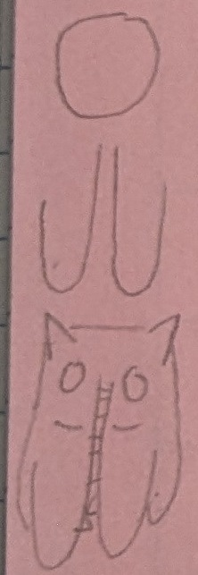
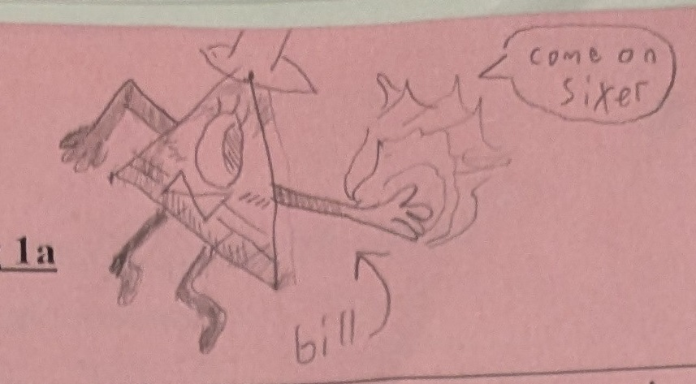
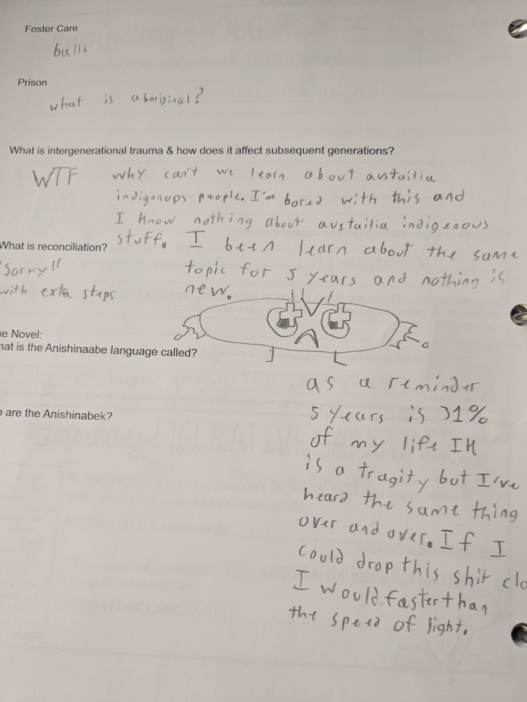

this page is about the doodles in my binder. These were drawn this semeter (grade 11 first semeter).
The first Half

descripion:
this is the page where i first drew half
if you look at the left side of the paper there is a circle
under the circle there is a two "U" shaped lines
and under that is the first doodle of half
rating:4/10
at first I was trying to draw a cat or something like it but I added
a mouth that went in between its legs and lines on its front legs.
I never had a Name for Half but when i was drawing it on
paintTM I only drew half of the image and so when
i named the png file i named it Half. I just never changed the
Named of it so it stuck.
Bill Cipher's first appearce

descripion:
I'm unsure if this is the first Bill I drew but seems to be the first
if you are unaware of what media Bill Cypher is from Bill is from the disneyTM show Gravity Falls
Bill is simpliy a dream demon who appears only in dreams
he's holding out his hand because his main gimick is making deals with people where he does something for them and he gets to control their body in return (he doesn't menion the controling your body part)
he looks like the eye of providence because in Gravity Falls he met the founding fathers and asked them to put him on the dollar
Bill is saying "come on sixer" because in the book "The book of Bill" Bill gets block from entering a character call stanford's head because he found out bill was evil. He did this by puting a tin plate inside his head to prevent bill
also the spiral horns took a lot of practice to get that well
the skeleton limbs i didn't have room for and I didn't have much practice with boney limbs
rating: 7.5/10
The Lich or The Last Scholar of Golb is a pretty simple villian from AT (Adventure Time). The Lich's
Goal is simpaily to get rid of all life in the universe. Even though he has a simple cause his character is
more complex. The Lich is eternal existing from start to finish and in ever universe.
the floating island has some roots sticking out of it. I'm not sure what plant their coming from but their there
the fungus on top of the island I imagined it having a red cap with white spots and a beige support
there are a few spores in the air coming out of the fungus
rating: 9/10
(i really like the mushroom)
I drew this on the same paper as the lich. Other than that there isn't much to say
Another english page
description:
many different places interacting
first of all you can ignore what was writen because the indigenous stoies were very untrust worthy anyways
on the first question i drew a pyramid with bill cypher as the tip of the building and a time spirit casting a fire ball at him
on the second question I drew the eye of salron looking directly at a stick figure of a student not being heard setting him on fire
on the last question is a time spirit (with it's mask off) creating a thunder cloud in it's mask
rating: 8/10
I heavily doubt that you know what I mean by "time spirit". A time spirit is a enitiy made of a mud like substance controled with a soul. The sprites/spirits also have golden parts to keep the mud in place. A golden mask, and two golden bracelets give its shape.
The pedals on the under side are larger creating a rose shape.
I also gave one a stem
rating: 6.5/10
this was drawn in physics class this semiester
Rant warning
RANT

description :
My opinion on mandatory indigenous classes
In english we were taking notes and i got bored
then I was told about austrailian indigenous people. this ticked me off because in the five years learning about indigenous people never have I been told this.
mid Rant I drew sausage man (indigenous people mascot)
I'm done with this english course. the only reason I need to take it is because some out of touch person of power. Made a shitty decision and now all students in canada gotta pay.
rating: N/A
31 ----ing percent and nothing but the same story over and over and over again. i wasn't even aware of austraila indigenous people and i've been learning the same thing for 5 years. This is the first time I learn they even exist.